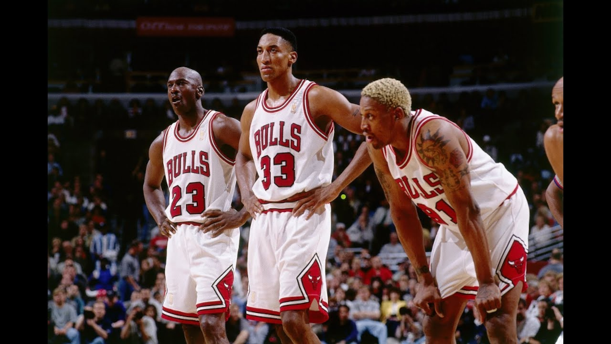

Piłka Nożna
Historia Piłki Nożnej
Piłka nożna w formie, jaką znamy obecnie, narodziła się na Wyspach Brytyjskich. Pierwsze reguły futbolu ustalone zostały w 1848 roku w Cambridge. Jednak już wcześniej grano w różne gry o podobnych zasadach, między innymi w Azji. Pierwsze piłki były wykonane ze zwierzęcych pęcherzy. Z czasem zarówno sama gra, jak i piłka do niej przeznaczona ewoluowały. Sport ten stawał się coraz bardziej popularny wśród uczniów brytyjskich uniwersytetów. Za datę zapoczątkowania dyscypliny zwanej piłką nożną w formie, w jakiej znamy ją dziś, uznaje się często datę 24 października 1857 roku. Tego dnia powstał Sheffield Football Club uznawany za najstarszy klub piłkarski na świecie. 13 lat później natomiast został utworzony angielski związek piłki nożnej o nazwie FA (The Football Association). W 1871 roku przeprowadzone zostały pierwsze krajowe rozgrywki piłkarskich FA CUP, w których udział wzięło 15 zespołów. Rok później powstała podobna organizacja w Szkocji i rozegrano pierwszy na świecie mecz międzypaństwowy zakończony remisem 0:0. Piłka nożna szybko stała się sportem narodowym Wielkiej Brytanii. Dzięki niej dokonało się wiele pozytywnych przemian społecznych. Pierwsze mistrzostwa świata zostały rozegrane w Urugwaju w 1930 roku. Zwyciężyli gospodarze. Organizacją, która trzymała wtedy pieczę nad zawodami, była FIFA - tak jest zresztą do dziś.
Wymiary boiska, bramek i piłki
Boisko do piłki nożnej ma wymiary prostokąta o szerokości od 45 do 90 m i długości od 90 do 120 m (przy jednoczesnym zastrzeżeniu, że boisko nie może być kwadratem, dla meczów międzynarodowych od marca 2008 roku FIFA ustanowiła wymiary boisk 105x68). Po przeciwległych stronach pola gry, na środku linii bramkowych, ustawione są bramki o szerokości między wewnętrznymi krawędziami słupków 7,32 m i wysokości dolnej krawędzi poprzeczki od podłoża 2,44 m. Zawody są rozgrywane piłką, która powinna mieć obwód nie mniejszy niż 68 cm i nie większy niż 70 cm, a jej masa powinna wynosić od 410 do 450 gramów. Przy rozpoczęciu zawodów ciśnienie powietrza we wnętrzu piłki musi wynosić od 0,6 do 1,1 atmosfery.
Popularni zawodnicy
W dzisiejszych czasach do najbardziej znanych gwiazd należą: Lionel Messi, Cristiano Ronaldo, Robert Lewandowski, Neymar Jr, Erling Braut Håland czy Kylian Mbappé.
Tabela Premier League
Poniżej podana jest tabela na żywo dotycząca jednej z najlepszych i najbardziej oglądanych lig piłki nożnej na świecie, czyli angielska Premier League.
Koszykówka

Historia Koszykówki
Gra w koszykówkę została stworzona w grudniu 1891 roku przez urodzonego w Kanadzie człowieka o nazwisku James Naismith. Naismith był nauczycielem w szkole YMCA w Springfield w stanie Massachusetts. Musiał wyszkolić młodych mężczyzn, aby zostali instruktorami w nowo otwartych centrach YMCA. Przez zimną pogodę utrzymując klasy w pomieszczeniach, w grudniu 1891 r., Naismith został poproszony przez kurator szkół wychowania fizycznego, dr Luther. H. Gulick, aby stworzyć grę halową, która utrzymywałaby młodych mężczyzn aktywnych podczas mroźnych zimowych miesięcy. Koszykówka wymagała bardzo niewiele sprzętu do grania… dwóch koszy na brzoskwinie wiszących 10 stóp nad ziemią i piłki. Celem gry jest praca w zespole, w celu rzucenia lub uderzenia piłki do kosza przeciwnego zespołu, jednocześnie broniąc wyniku przy swoim koszu. Jak można sobie wyobrazić, główną przeszkodą było to, że piłka nie wyskakiwała z kosza, kiedy drużyna ostatecznie zdobyła punkt. Niektórzy twierdzą, że używano długiego kija, aby wypchnąć piłkę, inni mówią, że ktoś musiał wspiąć się po drabinie, by ją odzyskać… zdania są podzielone. Tak czy inaczej, początkowo gracze nie byli świetnymi strzelcami, więc nie musieli się o to zbytnio martwić! Mało tego, w pierwszym kiedykolwiek rozgrywanym meczu zdobyto tylko jeden punkt! Początkowo gra obejmowała dziewięciu zawodników w każdej drużynie… Co! Dlaczego dziewięciu zawodników? Ponieważ klasa Naismith’a miała 18 osób. Opracował także zasady gry znane jako “The 13 Rules of Basketball”, czyli 13 podstawowych zasad, które wraz z rozwojem gry również zaczęły ewoluować. Sport stał się natychmiastowym sukcesem, a dzięki początkowemu impulsowi uzyskanemu przez ruch YMCA, popularność koszykówki szybko rosła w całym kraju i została wprowadzona w wielu krajach. Chociaż Naismith nie zobaczył, że gra rozwinęła się w spektakularną grę, jaką znamy dzisiaj, miał zaszczyt być świadkiem, jak koszykówka stała się sportem olimpijskim na Igrzyskach w 1936 roku w Berlinie.
Big Three
Zdjęcie przedstawia jednych z najbardziej znanych koszykarzy w historii. Są to: Michael Jordan, Dennis Rodman i Scottie Pippen.
Michael Jordan
Michael Jeffrey Jordan – amerykański koszykarz występujący na pozycji rzucającego obrońcy, sześciokrotny mistrz NBA, dwukrotny złoty medalista olimpijski, członek Koszykarskiej Galerii Sław. Od 2006 współwłaściciel klubu Charlotte Hornets.
Ciekawostka
Dzień po zdobyciu olimpijskiego złota w 1984 roku Nike i MJ usiedli jednak do negocjacji. Michael miał dostać obiecane 2,5 mln dolarów w ciągu pięciu lat oraz bonus za podpisanie kontraktu. Poza tym Nike miał reklamować jego markę Air Jordan i, jak było wcześniej wspomniane, zaoferował jeszcze 21-latkowi 25 proc.
Dennis Rodman
Dennis Keith Rodman – amerykański koszykarz, grający na pozycji silnego skrzydłowego. Występował w NBA, w takich zespołach jak: Chicago Bulls, Detroit Pistons, San Antonio Spurs, Los Angeles Lakers oraz Dallas Mavericks.
Ciekawostka
Od 2013 r., gdy reżim w Pjongjangu przyspieszył prace na bronią jądrową i pociskami balistycznymi, Rodman odwiedził Koreę Północną pięciokrotnie. Do wizyt dochodzi, mimo że Stany Zjednoczone mają na pieńku z tym zamkniętym krajem. 56-letni Rodman opowiedział o swojej przyjaźni z dyktatorem w programie „The Late Show” Stephena Colberta. – Gdy po raz pierwszy spotkałem się z Kim Dzong Unem, zapytał mnie: „Panie Rodman, chcemy wiedzieć, czy możemy panu ufać?”. „Oczywiście” – odpowiedziałem. I tak nasza rozmowa się zaczęła – wyjaśnił.
Scottie Pippen
Scotty Maurice Pippen, bardziej znany jako Scottie Pippen – amerykański koszykarz, występujący na pozycji niskiego skrzydłowego, sześciokrotny mistrz National Basketball Association z drużyną Chicago Bulls. W 2010 został włączony do Koszykarskiej Galerii Sław im. Jamesa Naismitha.
Ciekawostka
Pippen siedmiokrotnie uczestniczył w meczu gwiazd NBA, raz wybrano go nawet MVP (najbardziej wartościowym zawodnikiem spotkania). Razem z reprezentacją Stanów Zjednoczonych dwa razy triumfował na igrzyskach olimpijskich (w 1992 r. w Barcelonie oraz w Atlancie w 1996 r.).
Tabela
Poniżej zostały podane tabele Wschodniej i Zachodniej konfederacji.
Konferencja Wschodna
Konferencja Zachodna
Siatkówka
Historia Siatkówki
Dyscyplinę sportu, którą dzisiaj nazywamy siatkówką wymyślił w 1885 roku William Morgan nauczyciel ze szkoły w miejscowości Holyocke w stanie Massachusetts. Miała to być halowa gra zespołowa na podobieństwo koszykówki, która byłaby jednak mniej męcząca i przeznaczona dla ludzi w średnim wieku, zajmujących się prowadzeniem interesów. Morgan stworzoną przez siebie dyscyplinę nazwał „mintonette”, jednak widzowie pierwszego turnieju siatkówki, rozegranego w 1896 roku w Springfield, obserwując lot piłki nad siatką, nazwali ją „volleyball” – latająca piłka. Pierwszy turniej międzynarodowy rozegrany został w 1913 roku w Manilli z udziałem Japonii, Chin i Filipin. Siatkówka szybko zyskiwała nowych zwolenników w Ameryce i na innych kontynentach. W krótkim czasie w Europie i Azji zaczęły powstawać zespoły siatkarskie. Stopniowo wykształcały się reguły współczesnej siatkówki – od 1918 roku zespoły siatkarskie liczą sześciu graczy, zaś w roku 1920 wprowadzono regułę trzech odbić piłki przez jeden zespół. W 1947 roku powstała Międzynarodowa Federacja Piłki Siatkowej (FIVB). Jej pierwszym prezydentem został Francuz Paul Libaud. Tę funkcję pełnił do 1984 roku. Na Kongresie FIVB w Los Angeles kierowanie organizacją przekazał Meksykaninowi Rubenowi Acoście, który jest szefem do dzisiaj. W 1949 roku rozegrane zostały I mistrzostwa świata mężczyzn, a w 1952 I mistrzostwa świata kobiet. W turnieju męskim wygrał ZSRR przed Czechosłowacją i Bułgarią (Polska była piąta), a w kobiecym ZSRR przed Czechosłowacją i Polską. W igrzyskach olimpijskich siatkówka zadebiutowała w 1964 roku w Tokio. Wśród kobiet zwyciężyła Japonia przed ZSRR i Polską. W turnieju męskim pierwszy był ZSRR, druga Czechosłowacja, a trzecia Japonia. Rok później w Warszawie rozegrano pierwsze zawody o Puchar Świata mężczyzn. Od 1973 roku takie rozgrywki mają kobiety. Od 1990 roku odbywają się rozgrywki Ligi Światowej. Odpowiednikiem rywalizacji wśród kobiet – jest od 1993 roku Grand Prix.
Najlepsi Aktywni Polscy Siatkarze
| 1 | Wilfredo Leon |
|---|---|
| 2 | Mariusz Wlazły |
| 3 | Bartosz Kurek |
| 4 | Michał Kubiak |
| 5 | Piotr Nowakowski |
| 6 | Fabian Drzyzga |
| 7 | Łukasz Żygadło |
| 8 | Bartosz Bednorz |
| 9 | Paweł Zatorski |
| 10 | Karol Kłos |